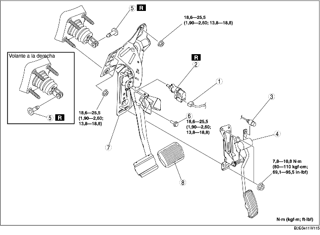

1. Para vehículos con volante a la izquierda, quitar la batería y la correspondiente bandeja. [Véase REMOCION/INSTALACION BATERIA (ZJ, Z6)]. [Véase REMOCION/INSTALACION BATERIA (LF)].
2. Desconectar el tubo de frenos (lado cilindro maestro). (Véase REMOCION/INSTALACION CILINDRO MAESTRO).
3. Quitar según el orden indicado en la tabla.
4. Instalar en el orden contrario al de la remoción.
5. Ajustar el cable del acelerador. [Véase CONTROL/AJUSTE CABLE DEL ACELERADOR (ZJ, Z6)]. [Véase CONTROL/AJUSTE CABLE DEL ACELERADOR (LF)].

.
|
1
|
Conector del interruptor de frenos
|
|
2
|
Interruptor de frenos
|
|
3
|
Cable del acelerador
|
|
4
|
Pedal del acelerador
|
|
5
|
Clavija de junta
|
|
6
|
Perno (volante a la izquierda)
|
|
7
|
Pedal del freno
(Véase Detalles de remoción pedal del freno).
|
|
8
|
Forro del pedal
|
1. Quitar las tuercas de instalación del pedal del freno.
2. Desplazar la unidad servofreno en la parte delantera del vehículo donde la horquilla de la unidad servofreno no interfiera con el brazo del pedal del freno.
3. Quitar el pedal del freno.
1. Para vehículos con volante a la izquierda, instalar la nueva clavija de junta alineando los orificios del pedal del freno y de la horquilla de la unidad servofreno.
2. Para vehículos con volante a la derecha, instalar la nueva clavija de junta alineando los orificios del soporte del pedal del freno y de la horquilla de la unidad servofreno.
3. Comprobar que la clavija de junta toque completamente la horquilla de la unidad servofreno.
1. Controlar el pedal del freno. (Véase CONTROL PEDAL DEL FRENO).
2. Con el pedal del freno completamente soltado, colocar el interruptor de frenos nuevo en el orificio de instalación del pedal del freno.
3. Fijar el interruptor de frenos girandolo en sentido antihorario de 45°.